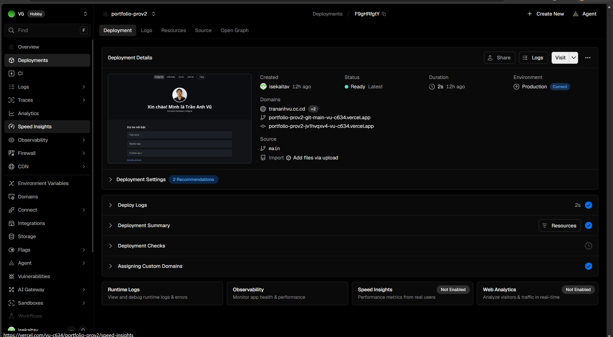
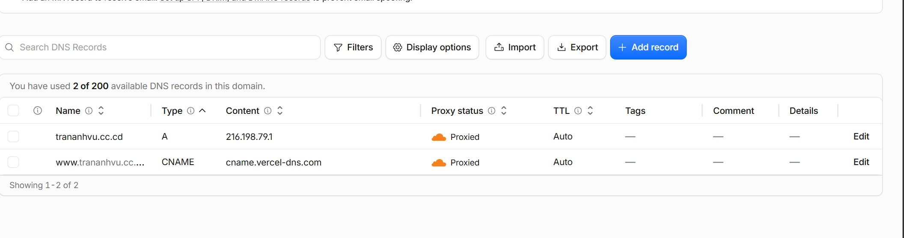

Đề bài
Nâng cấp portfolio và đưa lên domain riêng, gồm các yêu cầu:
- Trang Projects với lưới 6 dự án bằng CSS Grid.
- Form liên hệ chỉ dùng HTML, gửi qua Formspree.
- Responsive theo hướng mobile first.
- Animation khi scroll bằng Intersection Observer.
- Nút chuyển dark mode bằng JavaScript.
- Deploy lên Vercel hoặc Netlify, trỏ domain, bật HTTPS và dùng Cloudflare làm DNS trung gian.
Kết quả
- Website (HTTPS): https://trananhvu.cc.cd/
- Source code (GitHub): https://github.com/ISEKAITAV/portfolio-prov2
- Deploy trên Vercel (project portfolio-prov2, môi trường Production, trạng thái Ready).
- Domain trananhvu.cc.cd dùng nameserver Cloudflare: dana.ns.cloudflare.com và harley.ns.cloudflare.com.
- Bản ghi DNS trên Cloudflare:
Acho tên miền gốc trỏ về Vercel,CNAMEchowwwtrỏ về Vercel. Địa chỉwww.trananhvu.cc.cdtự chuyển hướng 308 vềtrananhvu.cc.cd.

